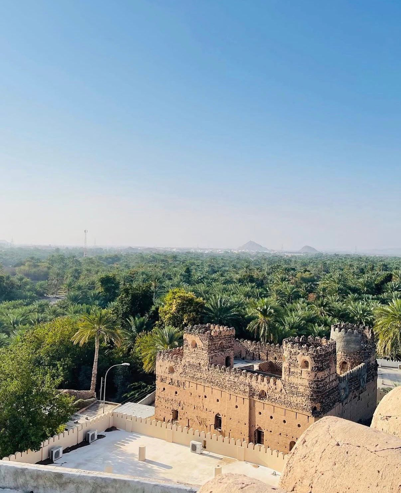
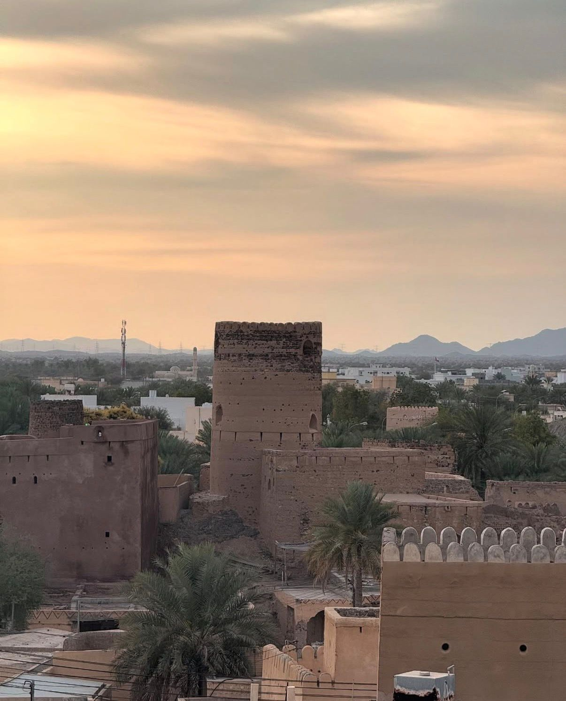
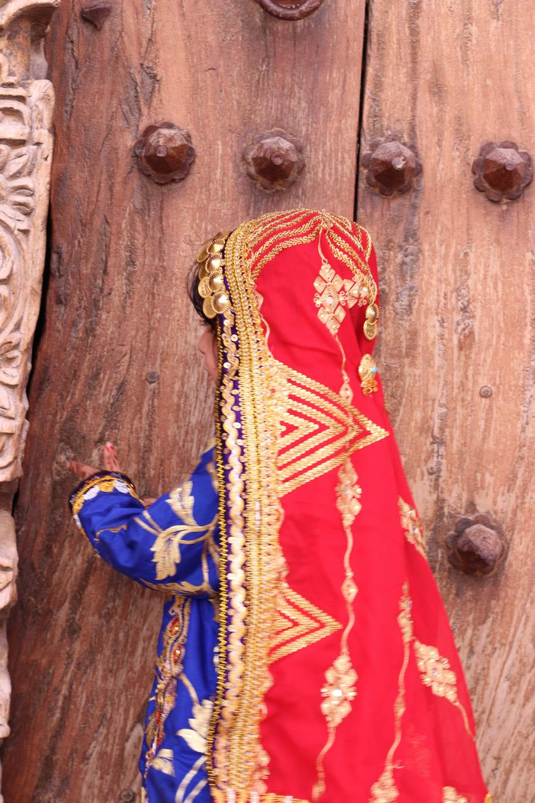
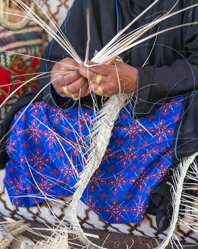
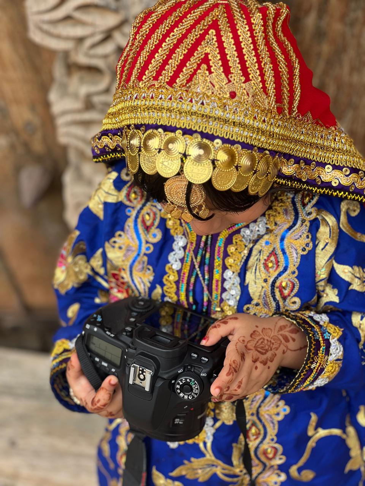
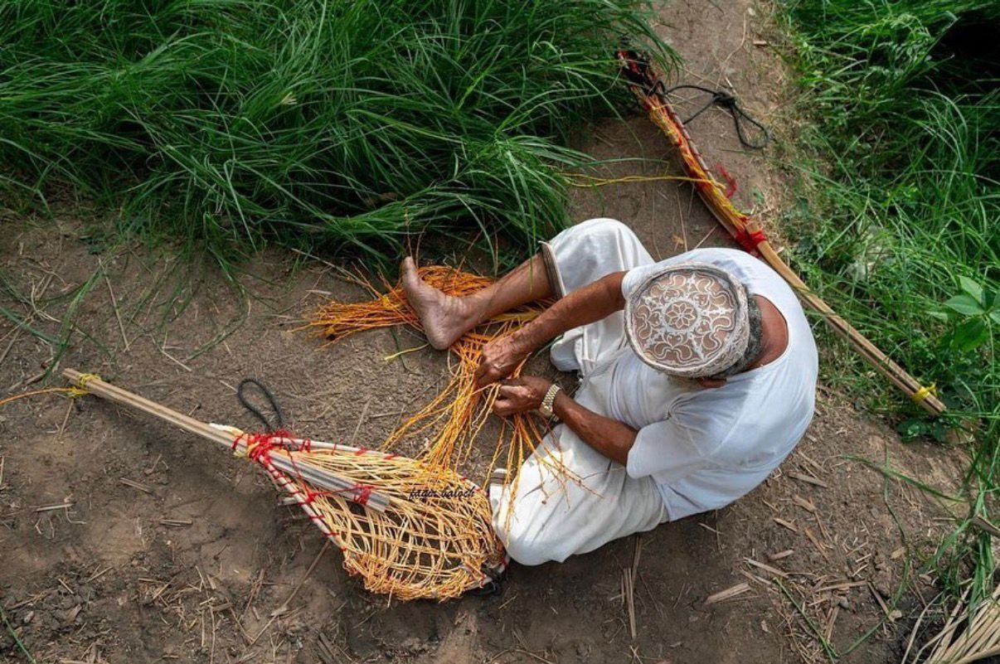
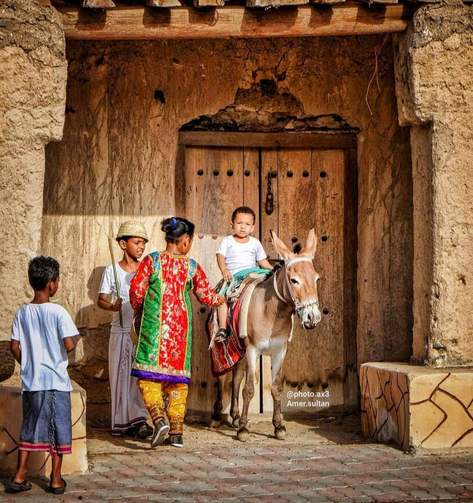
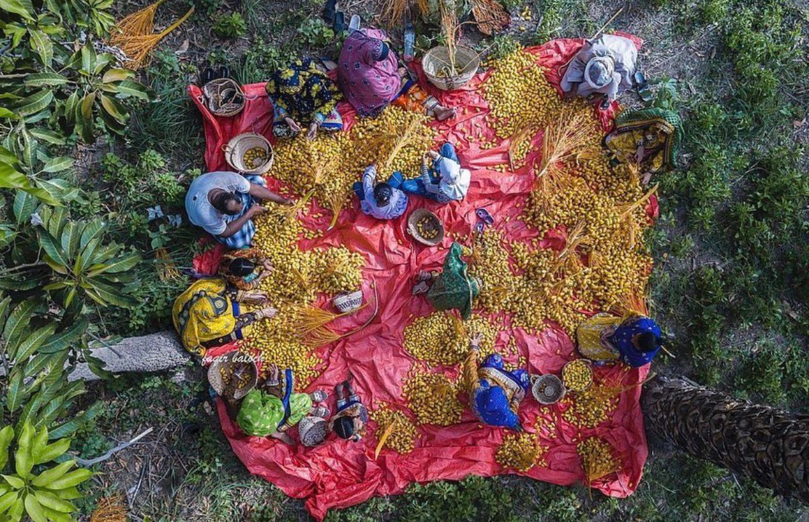

معرض الصور والفيديو
سيتم إضافة صور وفيديوهات المضيرب هنا









قرية عمانية عريقة ذات تاريخ وتراث غني
تعد المضيرب واحدة من أقدم وأهم القرى في ولاية القابل بمحافظة شمال الشرقية، وقد أطلق عليها السيد فيصل بن حمود بن عزان البوسعيدي لقب "مسقط الصغرى" لما تتميز به من عمران وزخارف معمارية عمانية فريدة.
تقع القرية على الطريق العام بين مسقط وصور، وتضم بيوتاً أثرية وزخارف معمارية تعكس جمال الفن العماني القديم، مما أدى إلى محافظة الأهالي على الطابع التراثي حتى في المباني الحديثة.
ويشتهر سكان المضيرب بحبهم للعلم والثقافة والمعرفة، إضافة إلى نشاطهم في مختلف المجالات الاجتماعية والاقتصادية.
عدد السكان: 5,751 نسمة (منهم 3,758 عماني)
تعرف على الإرث التاريخي الفريد في المضيرب
دروازة كشام – دروازة قرضوب – دروازة الغيوث – دروازة كنيشة. بوابات تاريخية كانت تشكل سور حماية للقرية.
من أهم معالم المضيرب، يقع أعلى الجبل في الجهة الشرقية ويعد رمزاً للدفاع والتراث.
وجهة التجار قديماً ويقام فيه “هبطة المضيرب” آخر هبطة قبل الأعياد.
تحيط بالبلدة جبال شاهقة كانت جزءاً من سورها التاريخي وتضفي جمالاً طبيعياً.
وديان طبيعية تمر بالقرية وتشكل جزءاً من تضاريسها المتنوعة.
جزء من التنوع الجغرافي للمضيرب وتضيف سحراً صحراوياً للمنطقة.
تعرف على نمط الحياة التراثي في المضيرب
صناعة الحلوى – صناعة السعفيات – الزراعة التقليدية.
خياطة الملابس العمانية التقليدية.
أسواق تاريخية نشطة قديماً ولا تزال جزءاً من الحياة الاجتماعية.
أهالي المضيرب معروفون بحبهم للعلم والثقافة عبر الأجيال.
مناخ صحراوي حار وشتاء معتدل
المناخ في قرية المضيرب هو مناخ صحراوي حار؛ الصيف شديد الحرارة، بينما يكون الشتاء معتدلاً، ويكون هطول الأمطار قليلاً ومتركزاً بين أشهر ديسمبر إلى مارس.
تقع القرية عند الإحداثيات التالية:
خط العرض: 22.6158222 – خط الطول: 58.6629926
قصائد خالدة في حب المضيرب من شعراء عُمان
الشاعر: أحمد بن سعيد الحارثي
هذي المضيرب ما أحلى مبانيها
والطير ينشدُ في أعلى روابيها
فيها القلاعُ وأبراجٌ بها بنيت
ونهرها العذب يروي كل ما فيها
يروي النخيل ويسقي كل نابتةٍ
يسقي بساتين زهرٍ طاب أهليها
فيها ثلاثون بيت الله قائمةً
لمن أراد يؤدي فرضه فيها
فيها مدارس بالقرآن عامرةً
لتغرس العلم في حضرٍ وباديها
يكفي بمدرسة الأيوبي شامخةً
وسر مزوناً مساء كي تحييها
وإن مرضت فسر نحو الطبيب تجد
ما عنده في مجال الطب كافيها
وإن رجعت وقد عوفيت من مرض
تجد هناك بريد قائم فيها
فابعث رسالتك الفصحى تبلغني
فإنني هائم في صرح ناديها
مابين مكتبة النادي ومسرحهيحلوا لك الوقت كي تلقى مغانيها
وإن شكوت من الأنوار منقصة
إدارة الكهربا فالأمر يعنيها
وإن رأيت من الأوراق شاردة
تجد أناس لهم فضل البنا فيها
وإن أردت لتلك الأرض تزرعها
فمكتب الري موجود حواليها
وإن عرتك من الأيام نائبة
هنالك البنك موجود بكافيها
وللفقير بيوت الخير قد بنيت
من فضل قائدنا قابوس بانيها
وإن رأيت مياه الشرب مالحةفاصعد قليلا تجد ماء يرويها
هناك بئر بفضل الله قد حفرتفي عهد نهضتنا الغراء مباديها
هذي المضيرب أوصافي لها كملتمازدت شيئا ولا أنقصت مافيها
سيتم إضافة صور وفيديوهات المضيرب هنا